생물분류기사(식물) (2008-05-11 기출문제)
1과목: 계통분류학
1. 갈라파고스 섬에 사는 핀치새가 우리에게 보여주는 진화적 지식으로 가장 적합한 것은?
- continuous evolution
- convergent evolution
- coevolution
- divergent evolution
(정답률: 88%)

2. 동물문과 유생의 관계가 옳게 짝지어진 것은?
- 연체동물 - 토르나리아 유생
- 반삭동물 - 플라눌라 유생
- 자포동물 - 크로코포라 유생
- 극피동물 - 비핀나리아 유생
(정답률: 40%)
3. 단계통군(monophyletic group)에 대한 설명 중 가장 적합한 것은?
- 공통조상과 이로부터 유래된 모든 자손분류군들을 포함하는 군
- 공동조상만 포함하는 군
- 공통원시형질에 의해 정의되는 자손분류군을 제외한 분류군
- 서로 다른 조상으로부터 유래되었으나 유전적으로 동일한 자손분류군을 포함하는 군
(정답률: 80%)
4. 다음 중 국제식물명명규약상 식물군 이름은 기준군의 이름에 지정된 어미를 붙여야 하지만, 전통적으로 사용해오던 이름을 함께 사용해도 되는 것에 해당하지 않는 것은?
- 미나리과
- 벼과
- 인동과
- 물레나물과
(정답률: 87%)
5. 다음 중 한반도 고유속으로 가장 거리가 먼 것은?
- 내느삼속(Echinosophora)
- 초롱꽃속(Campanula)
- 금강인가목속(Pentactina)
- 미선나무속(Abeliophyllum)
(정답률: 58%)
6. 물푸레나무과의 주요 특징으로 가장 거리가 먼 것은? (단, 드물게 관찰되는 경우 제외)
- 대개 잎이 대생한다.
- 꽃잎은 주로 이생한다.
- 암술은 보통 2심피가 합생한다.
- 수술은 보통 2개이다.
(정답률: 90%)
7. 다음 중 생물학적 종의 개념(biological species cooncept)으로 가장 적합한 것은?
- 다른 집단과는 생식적으로 격리되어 있는 실제 혹은 잠재적으로 교배가 가능한 개체군의 집단
- 다른 집단과 형태적으로 뚜렷이 구분되는 개체군의 집단
- 하나 또는 그 이상의 파생형질로 정의되는 집단
- 유사한 생태적 지위 및 특성을 갖는 개체군의 집단
(정답률: 85%)
8. 신종을 발표하는 논문을 작성할 때, 가장 가까운 종들과의 중요한 차이에 대한 간략한 기술은 다음 중 어느 항목에서 언급하는 것이 가장 적합한가?
- 기상(diagnosis)
- 고찰(discussion)
- 요약(abstract)
- 관찰재료(material examined)
(정답률: 37%)
9. 구과식물 중 소나무과에 대한 설명으로 가장 거리가 먼 것은?
- 주로 교목 또는 관목이다.
- 씨에 육질종피가 발달하여 전체를 둘러싼다.
- 잎은 단엽이거나 또는 2.3.5개가 속생하는 침엽이다.
- 소포자엽의 배축면에 소포자낭 또는 화분낭이 달려있다.
(정답률: 알수없음)
10. 동물명명규약상 신종을 밝히는데 사용된 모식계열(type series)표본 중 holotype을 제외한 모든 모식표본을 일컫는 것은?
- syntype
- lectotype
- neotype
- paratype
(정답률: 알수없음)
11. 해부학적 형질이 분류 목적에 적용되는 동안에 밝혀진 일반적인 원리로 가장 거리가 먼 것은?
- 해부학적 자료는 속(屬)이나 그 이상의 분류 계급에서 가장 유용하게 쓰인다.
- 구조적 특수화에서 초래되는 유사점은 평행진화 또는 수렴진화에 의한 것이라기 보다는 가까운 유연관계를 의미하는 것이다.
- 해부학적 자료는 유연관계가 있는 것을 보여주기 보다는 가까운 유연관계가 아님을 보여주는 겅우에 더 신빙성이 있다
- 기관이나 조직의 한 가지 해부학적 특징이 종(種) 또는 속(屬)을 대표하는 것이 아닌 경우도 많다.
(정답률: 73%)
12. 환형동물 중 다모강(Class Polychaeta)에 관한 설명으로 가장 거리가 먼 것은?
- 보통 암수띤몸이고, 아생생식을 하는 것도 있다.
- 등부의 체절 좌우에는 측각이 있다.
- 유생의 배설기는 후신관이지만, 성체는 보통 원신관이다.
- 다모강은 유영목, 저서목, 원환충목으로 나뉜다.
(정답률: 42%)
13. 척삭동물 중 피낭류의 특성에 관한 설명이다. ( ② )안에 알맞은 것은?
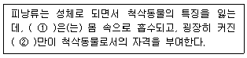
- 신경삭
- 꼬리
- 새농
- 척삭
(정답률: 50%)
14. 각 식물분류에 대한 다음 설명 중 옳지 않은 것은?
- 나자식물의 종자는 배(embrto), 배유(endosperm)와 종피(seed coat)로 구성되어 있다.
- 솔잎란의 생활사는 포자체기가 우세한 반면, 배우체는 작고, 포자체와 분리되어 지하에서 자란다.
- 바위손속은 이형포자를 가진다.
- 은행나무는 나자식물에 속한다.
(정답률: 82%)
15. 변이를 유전적 변이와 비유전적 변이로 분류할 때, 다음 중 비유전적 변이에 해당하지 않는 것은?
- 암수모자이크 및 간성
- 연령적 변이
- 서식처에 따른 변이
- 신경원성 변이
(정답률: 73%)
16. 국제식물명명규약상 다음 분류계급과 그 학명의 어미와의 연결로 옳지 않은 것은?
- 족(tribe): -eae
- 목(order): -ales
- 아과(subfamily): -ideae
- 아족(subtribe): -inae
(정답률: 47%)
17. 유형동물 중 무침강(Class Anopla)의 특징으로 가장 거리가 먼 것은?
- 구문은 앞 부위에서는 좁지만 결코 부위별로 나뉘어지지는 않는다.
- 입은 뇌의 앞쪽에 열려 있다.
- 구문에는 침이 없다.
- 중추신경계 아래에 표피가 있고, 또는 그 사이에 체벽근이 있다.
(정답률: 25%)
18. 후생동물(Metazoa)을 문으로 나눌 때의 분류기준으로 가장 거리가 먼 것은?
- 발생상의 배엽성(이배엽성 또는 삼배엽성)
- 체강의 존재 유무
- 입과 항문이 있는 소화관의 유무
- 머리, 가슴, 배의 구분
(정답률: 84%)
19. 장미과의 아과에 대한 검색표이다. ( )안에 알맞은 것은?
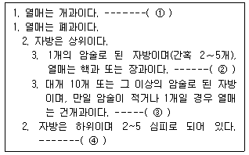
- ① 배나무아과, ② 앵도나무아과, ③ 장미아과, ④ 조팝나무아과
- ① 조팝나무아과, ② 앵도나무아과, ③ 장미아과, ④ 배나무아과
- ① 앵도나무아과, ② 장미아과, ③ 배나무아과, ④ 조팝나무아과
- ① 장미아과, ② 배나무아과, ③ 조팝나무아과, ④ 앵도나무아과
(정답률: 70%)
20. 다음 중 “convergent evolution"을 가장 올바르게 설명한 것은?
- 유사 선조 생물의 비슷한 모양의 진화
- 유사 선조 생물의 다른 모양의 진화
- 다른 조상 생물의 비슷한 모양의 진화
- 다른 조상 생물의 다른 모양의 진화
(정답률: 64%)
2과목: 환경생태학
21. 산성 강하물이 지표수에 미치는 영향에 관한 설명으로 가장 거리가 먼 것은?
- 산성 강하물은 대기 중의 H2SO4, HNO3 등에 의해서 주로 발생한다.
- 기반암석이 석회암으로 이루어진 경우가 화강암으로 이루어진 곳보다 영향을 덜 받는다.
- 유역면적이 좁을수록 산성강하물의 영향을 적게 받는다.
- 중성염이 산성화를 지연시키는 요인으로 작용한다.
(정답률: 82%)
22. 다음 중 지구 온난화 유발물질과 가장 거리가 먼 것은?
- CH4
- CO2
- N2O
- SO2
(정답률: 50%)
23. 천이에 관한 설명으로 가장 거리가 먼 것은?
- 독립영양천이는 보통 에너지의 흐름이 그대로이거나 증가한다.
- 종속영양천이의 경우 천이 초기에 에너지 양이 최소값을 보이거나 천이가 진행됨에 따라 점차 증가한다.
- 다생천이는 자생천이에 비해 그 변화를 예측하기가 어렵다.
- 독립영양천이는 유기물이 거의 없는 무기적 환경에서 시작되며, 처음부터 독립영양생물이 우세하다.
(정답률: 54%)
24. 개체군을 시기에 따라 비교하고자 할 때, 관심을 가지고 측정해야 할 속성 중 가장 거리가 먼 것은?
- 전출입률
- 출생·사망률
- 개체의 크기
- 연령분포
(정답률: 90%)
25. 영양단계간 에너지 전환 효율에 관한 설명으로 가장 거리가 먼 것은?
- 하나의 영양단계에서 다음 단계로 에너지가 전달되는 과정에 있어서 효율성을 린드만 효율이라 한다.
- 세균이 장내에 공생하지 않는 초식동물의 동화효율이 세균이 공생하는 초식동물의 동화효율보다 높다.
- 영양단계 간에 있어 실질적인 먹이원으로서 소비된 효율을 소비효율이라 한다.
- 특정 영양단계에서 다음 상위단계로 전환될 때, 영양단계간의 생태적 효율은 일반적으로 낮다.
(정답률: 65%)
26. 용승 현상에 관한 설명으로 가장 적합한 것은?
- 영양소를 가진 차가운 물이 육지에서 바다로 공급된다.
- 표층에서 계속하여 침전이 발생하여 영양소의 퇴적이 많다.
- 아열대 고압대의 편서풍 지역에서 주로 발생한다.
- 심층수에 의한 영양염류가 많아 기초생산성이 높다.
(정답률: 60%)
27. 편리공생과 상리공생으로 구분할 때, 다음 중 편리공생 관계로 가장 적합한 것은?
- 황로와 소
- 악어와 악어새
- 개미와 균류
- 녹조류와 짚신벌레
(정답률: 100%)
28. 다음은 오염물질에 관한 설명이다. ( )안에 알맞은 것은?
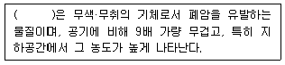
- 포름알데하이드
- 석면
- 라돈
- 벤젠
(정답률: 82%)
29. 종의 풍부도 경향에 관한 설명으로 가장 거리가 먼 것은?
- 종의 풍부도는 서식처가 복잡할수록 감소한다.
- 종의 풍부도는 지역의 규모가 커질수록 증가한다
- 한 지역에서 종의 풍부도는 종의 지리적 근원지에 가까울수록 증가한다.
- 종의 풍부도는 주로 저위도에서 증가한다.
(정답률: 77%)
30. 다음은 생물군계에 관한 설명이다. ( )안에 알맞은 것은?
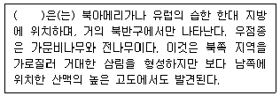
- 차파렐
- 툰드라
- 타이가
- 온대 낙엽수림
(정답률: 85%)
31. 다음은 국제적 협약(조약)에 관한 설명이다. ( )안에 알맞은 것은?
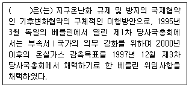
- 런던협약
- 교토의정서
- 바젤협약
- 몬트리올의정서
(정답률: 79%)
32. 기수(brackish water)호에 관한 설명 중 옳지 않은 것은?
- 기수호에는 바닷물고기, 담수물고기가 함께 살수 있다.
- 서식종의 종수가 적다.
- 기수호 생물들은 삼투조절자로 염분변화에 좁은 내성을 가진 협염성 생물들이다.
- 기수호 생물은 대양에 서식하는 생물보다 크기가 대체로 작다.
(정답률: 알수없음)
33. 다음은 암모니아성 질소의 질산화 과정이다. ( )안에 알맞은 것은?
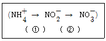
- ① Pseudomonas, ② Bacillus
- ① Bacillus, ② Pseudomonas
- ① Nitrosomonas, ② Nitrobacter
- ① Nitrobacter, ② Nitrosomonasr
(정답률: 90%)
34. 다음은 오염물질의 특성에 관한 설명이다 ( ① )안에 가장 적합한 것은?
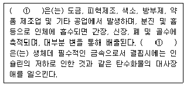
- 납
- 크롬
- 비소
- 아연
(정답률: 84%)
35. 전이의 성숙단계에 있는 생태계의 특성으로 옳은 것은?
- 영양염류의 순환이 개방적이다.
- 생물량과 유기물 현존량이 감소한다.
- 생물과 환경간의 영양물 교환속도가 작다.
- 먹이연쇄가 비교적 단순하며 직선적이다.
(정답률: 55%)
36. 수질 및 대기오염과 상대 비교시 토양오염의 특성으로 가장 거리가 먼 것은?
- 오염경로가 다양하다.
- 원상복구가 어렵다.
- 오염영향이 광역적이다.
- 타 환경인자와의 영향관계가 모호하다.
(정답률: 82%)
37. 개체군의 크기가 일정 이상을 유지하여야 비로소 개체사이에 협동이 이루어져서 최적의 생장과 생존을 유지한다는 것을 무엇이라 하는가?
- Allee의 효과
- Liebig의 법칙
- Shelford의 법칙
- Lotka-Volterra설
(정답률: 75%)
38. 호수나 하천의 부영양화에 의한 현상으로 거리가 먼 것은?
- 수소 순환과정 변화
- 수질의 색도 증가
- 수서생물의 종류 변화
- 화학적 산소요구량의 증가
(정답률: 82%)
39. 쑥과 같이 화학물질을 주변 환경에 방출하여 다른 식물의 성장을 억제하는 것을 일컫는 용어는?
- hazard
- allelopathy
- competition
- ascension
(정답률: 85%)
40. 혐기 상태에서의 유기물 분해에 관여하지 않는 생물군은? (단, 고등동물의 특정 근육세포는 제외)
- bacteria
- yeasts
- protozoa
- ferns
(정답률: 67%)
3과목: 형태학
41. 곡류를 섭취하는 조류에서 씨가 분쇄되는 장소는?
- crop
- proventriculus
- ventriculus
- omasum
(정답률: 54%)
42. 다음 중 불완전변태를 하는 곤충들로만 나열된 것은?
- 노린재목, 매미목
- 벌목, 노린재목
- 파리목, 매미목
- 밑들이목, 딱정벌레목
(정답률: 46%)
43. 아래의 그림은 고사리의 세대교번을 나타낸 것이다. 각 번호에 해당하는 용어가 옳게 나열된 것은?
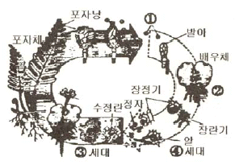
- ① 포자, ② 전엽체, ③ 무성, ④ 유성
- ① 포자, ② 전엽체, ③ 유성, ④ 무성
- ① 전엽체, ② 포자, ③ 무성, ④ 유성
- ① 전엽체, ② 포자, ③ 유성, ④ 무성
(정답률: 54%)
44. 잎과 일차 줄기의 표피세포는 어디에서 유래되는가?
- protoderm
- periderm
- sclerenchyma
- procambium
(정답률: 42%)
45. 곤충에서 정자낭에 관한 설명으로 가장 적합한 것은?
- 곤충에서 정자가 자라나는 곳이다.
- 암컷이 수정할 때까지 정자를 저장하는 곳이다.
- 수컷이 교미할 때까지 정자의 운반통로 역할을 한다.
- 정자의 덩어리이다.
(정답률: 79%)
46. 다음은 후각조직에 관한 설명이다. ( )안에 알맞은 것은?
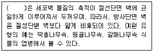
- 각우후각조직
- 판상후각조직
- 간극후각조직
- 환상후각조직
(정답률: 90%)
47. 아래의 설명과 관련 있는 동물문에 속하는 동물은?
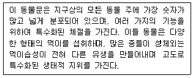
- 꼬마선충
- 민달팽이
- 투구게
- 해파리
(정답률: 65%)
48. 다음 중 알을 낳는 포유류는?
- 코알라
- 가시두더지
- 고슴도치
- 아홉띠아르마딜로
(정답률: 50%)
49. 뿌리의 내피(endodermis)에 대한 설명으로 틀린 것은?
- 외피와 피층 조직 사이에 나타난다.
- 내피 바로 안쪽에는 내초가 발달한다.
- 세포벽의 방사측면과 횡측면에 비후부분인 카스파리띠가 있다.
- 내피세포들은 서로 단단히 붙어있고, 세포간극이 없다.
(정답률: 39%)
50. 다음 ( )안에 알맞은 것은?
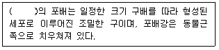
- 성게
- 개구리
- 조류
- 포유류
(정답률: 72%)
51. 다음 중 2쌍의 촉각을 가지고 있는 동물은?
- 거미
- 곤충
- 갑각류
- 노래기
(정답률: 58%)
52. 조류의 호흡계에 관한 설명으로 틀린 것은?
- 공기가 허태 내에서 한 방향으로만 흐른다.
- 폐를 중심으로 2쌍의 전기낭과 3쌍의 후기낭이 있다.
- 조류의 폐는 호흡과정 동안 부피가 별로 변하지 않는다.
- 기낭들은 실제적인 가스교환과는 거의 무관하고, 공기저장소로서의 역할과 공기를 폐로 출입시키는 작용을 주로 한다.
(정답률: 58%)
53. 육상지렁이에서 점액질이 고치(cocoon)가 분비되는 곳은?
- 위구절(peristomium)
- 환대(clitellum)
- 강모(seta)
- 암생식공(female renital pore)
(정답률: 64%)
54. 줄기에 대한 설명으로 옳지 않은 것은?
- 외사관상 중심주는 종자식물군에서만 나타난다.
- 진화계통상 관상중심주가 원생중심주보다 원시적이다.
- 병립유관속은 나자식물과 피자식물에서 가장 보편적으로 나타나는 유관속이다.
- 복병립유관속은 물관부나 체관부의 어는 한쪽이 다른 한쪽의 내측이나 외측에 분화된 유관속이다.
(정답률: 82%)
55. 다음 중 복족류 연체동물이 보여주는 형태적 형질과 가장 거리가 먼 것은?
- 패각(shell)
- 발(foot)
- 각정(umbo)
- 수관(siphon)
(정답률: 알수없음)
56. 쌍자엽식물의 뿌리에서 영양분의 흡수 경로로 옳은 것은?
- 피층 → 내초 → 내피 → 목부
- 내초 → 피층 → 내피 → 목부
- 내피 → 내초 → 피층 → 목부
- 피층 → 내피 → 내초 → 목부
(정답률: 77%)
57. 피자식물에서 중복수정이 이루어질 때, 밑씨의 구조 중 화분관이 들어오는 입구는?
- 주심
- 주병
- 주공
- 합점
(정답률: 70%)
58. 다음 중 중축골격(axial skeleton)에 속하는 것은?
- 상완골(humerus)
- 슬개골(patella)
- 가슴뼈(sternum)
- 요대(pelvic girdle)
(정답률: 67%)
59. 하나의 꽃에 있는 여러 개의 분리된 심피들이 1개의 화탁(花托) 위에서 발달하는 동안, 심피들과 화탁 조직이 함께 자라서 생긴 열매로서, 심피들이 융합하지 않고 각각 독립된 여러 개의 수과로 발달되는 열매를 일컫는 것은?
- 삭과
- 취과
- 장과
- 협과
(정답률: 67%)
60. 줄기에 관한 다음 설명 중 가장 거리가 먼 것은?
- 엽액에 위치한 눈을 맥아(axillary bud)라 한다.
- 단자엽식무르이 줄기는 부제중심주(atactostele)를 갖는다.
- 단자엽식물의 기본조직은 피층과 수로 구분된다.
- 주축유관속이 독립성이 없고, 횡으로 연결되어 서로 망상을 이루는 유관속계를 폐쇄형이라 한다.
(정답률: 37%)
4과목: 보존 및 자원생물학
61. 야생식물의 종자를 채집하여 종자은행에 저장하고자 할 때 야생종의 표본 추출 전략으로 가장 거리가 먼 것은?
- 종자의 수집은 한 종당 5개 이상의 개체군으로부터 이루어져야 한다.
- 종자는 개체군당 3개체 이상 채집하여야 대립유전자의 누락을 막을 수 있다.
- 개체당 종자수는 종자의 활력에 따라 정해야 한다.
- 개체들의 자식생산 능력이 낮은 경우에는 수 년에 걸쳐 고루 종자를 수립한다.
(정답률: 42%)
62. 복원생태학에서 생물군집과 생태계를 복원하는데 활용하는 방법론으로 가장 거리가 먼 것은?
- 방치
- 회복
- 유출
- 대체
(정답률: 75%)
63. 소개체군에서 나타나는 유전변이성의 소실에 대한 내용으로 거리가 먼 것은?
- 근교약세
- 타식강세
- 진화적 유연성 소실
- 생식능력의 차이로 인한 유효개체군 크기의 감소
(정답률: 67%)
64. 대부분의 동물원에서 종보전을 위해 역점을 두는 사항으로 가장 적합한 것은?
- 인공 증식
- 종보전을 위한 교육
- 보호를 위한 희귀동물의 채집
- 희귀종의 야외 적응 훈련
(정답률: 77%)
65. 생물 다양성 개념에 등장하는 종(species)에 관한 설명으로 가장 거리가 먼 것은?
- 하나의 종은 형태적, 생리학적 및 생화학적인 몇 가지 특성에 있어 다른 개체군의 차이를 보이는 개체군을 의미한다.
- 야외 관찰을 주로 하는 생물학자들은 주로 자연계에서 개체들 간의 교배 여부를 파악아혀 생물학적 종 구분에 필요한 정보를 얻는다.
- DNA 염기서열분석 등을 이용하면 박테리아처럼 외관상 별다른 차이가 없는 종도 구분할 수 있다.
- 형태학적 종의 개념은 표본동정이나 종의 체계적인 배열을 연구하는 분류학자들이 가장 많이 사용하는 방식이다.
(정답률: 60%)
66. 다음 중 멸종되기 쉬운 종에 속하는 범주가 아닌 것은?
- 지리적 분포 범위가 좁은 종
- 개체군의 크기가 감소하고 있는 종
- 몸체가 작은 종
- 유전적 변이가 낮은 종
(정답률: 84%)
67. 소수 개체군의 멸종에 관한 설명으로 가장 거리가 먼 것은?
- 작은 수, 규모의 하위 개체는 멸종하기 쉽다.
- 지역, 분류군의 다양성과 멸종률은 긍정적인 비례관계를 나타낸다.
- 동식물 멸종의 가장 위험한 요소로는 서식처 또는 섬지역 등이다.
- 갑자기 늘어난 개체수는 분열되지 않은 개체보다 더 위험하다.
(정답률: 67%)
68. 인도네시아 코모도 도마뱀이 가장 큰 육식성 도마뱀이라는 것은 보호 우선 순위의 기준 중 어디에 가장 적합한가?
- distinctiveness
- edibilitr
- potentiality
- development of the region
(정답률: 알수없음)
69. 다음 중 생물학적 군집에 의한 생태계의 비소비적 사용 가치와 가장 거리가 먼 것은?
- 작물의 유전적 개량
- 식물의 증산 작용
- 균류의 오수 분해
- 해조류의 광합성
(정답률: 67%)
70. 훼손된 자연생태계 교정방법 중 “복원(restoration)"에 관한 설명으로 가장 적합한 것은?
- 원래의 생태계로 회귀가 불가능한 경우 구조적으로 완전히 다르지만 자연 생태계의 기능을 원활히 수행하도록 하는 교정에 중점을 두는 행위
- 훼손된 환경에 대한 교정 노력이 적극적으로 수행되는 일련의 과정 중 원래 존재하던 상태로 정확히 회귀하는 것
- 정확한 회귀는 아니지만 기능이나 구조에서 거의 유사한 상태로 회복시키는 것으로 자연 생태계의 기능이 잘 나타날 술 있도록 하는 것에 중점을 두는 행위
- 생태계 스스로 원래의 모습으로 되돌아 갈 수 있도록 충분한 시간 동안 훼손된 지역을 그대로 두는 것
(정답률: 70%)
71. 생물종 보존에 관한 설명으로 옳지 않은 것은?
- 장내(in-situ)보존은 인간의 간섭과 이용이 허용된다.
- 장외(ex-situ)보존은 생물 등의 생육환경을 자연상태와 유사하게 조성, 관리하는 방법이다.
- 장내(in-situ)보존은 기존의 생태적 가치가 있는 광역의 생태적 단위지역을 조사하여 생태적 보전지역 등을 지정하여 보존하는 방법을 의미한다.
- 장외(ex-situ)보존은 동물원, 식물원 등이 해당된다.
(정답률: 69%)
72. 절멸에 대한 설명으로 가장 거리가 먼 것은?
- 야생에서 졀멸된 것은 종 내의 개체가 포획된 상태나 인간이 통제하고 있는 상태에서만 살아있을 때를 말한다.
- 생태적으로 절멸된 것은 서식지가 없어져 종이 사라진 것을 언급한다.
- 국지적으로 절멸된 것은 한 곳에서는 종이 사라졌지만, 다른 곳에서는 살고 있는 것을 언급한다.
- 한 종의 어떤 기체도 지구상에 없을 때 그 종은 절멸한 것으로 간주한다.
(정답률: 47%)
73. 다음 중 육상의 생물군집에 있어서 풍부도의 증가요인으로 가장 거리가 먼 것은?
- 고도가 낮고 태양광선을 많이 받을수록
- 지형이 복잡할수록
- 지질학적 연령이 낮을수록
- 강우량이 많을수록
(정답률: 84%)
74. 기후변화에 따른 생물다양성의 변화와 멸종에 미치는 영향에 관한 설명 중 가장 거리가 먼 것은?
- 해수면의 상승으로 해안습지의 파괴
- 소나무 군락의 분포가 현재보다 북쪽으로 이동
- 산호초 서식지의 북방한계선 변동
- 온도의 상승으로 모든 생물종의 분산능력이 증가
(정답률: 85%)
75. 식물원과 수목원의 기능으로 가장 거리가 먼 것은?
- 희귀종과 위험종의 재배
- 식물의 분포나 서식지 요구도에 대한 정보 제공
- 희귀종의 상업적 판매
- 탐사대를 파견하여 새로운 종 발견 및 기초연구 수행
(정답률: 93%)
76. 종 다양성 비교를 위해 고안된 수학적 지수 중 알파다양성(alpha diversity)에 관한 설명으로 가장 적합한 것은?
- 종 조성이 다양한 환경기울기에 따라 얼마나 변하는지 그 정도를 나타낸다.
- 각기 다른 생태계에 서식하는 군집 간 종수를 비교할 때 흔히 사용된다.
- 어떤 종들이 지리적으로 다른 지역에서 같은 종류의 서식처를 만날 확률을 말한다.
- 이끼군집이 고도에 따라 계속 변한다면 알파다양성이 높다고 할 수 있다.
(정답률: 73%)
77. 핵심종(keystone species)의 설명으로 가장 적합한 것은?
- 핵심종은 군집 또는 생태계 내에서 개체수가 가장 많은 종으로 그 군집 또는 생태계를 지탱하는 중추적 역할을 하는 종이다.
- 핵심종은 생태계내의 영양단계상 주로 하부에 위치하여 상위 포식자와 하위 생산자 또는 초식동물들을 중간에서 조절하는 중추적 역할을 하는 종이다.
- 핵심종은 하위 영양 단계의 생물군의 보전을 위해서 종추종을 최대한으로 번창시킬 수 있도록 개체군의 크기를 조절해야 한다.
- 군집 또는 생태계 내에서 핵심종이 사라지면 영양 단계가 붕괴 되어 궁극적으로 그 군집 또는 생태계가 붕괴된다.
(정답률: 90%)
78. 어류 개체군 조절에 의한 훼손 호수의 복원방법으로 가장 거리가 먼 것은?
- 어류군집조성을 포식-피식 관계를 통하여 부영양화과정에 영향을 줄 수 있다.
- 부영양화된 호수에서 조류를 먹은 동물성 플랑크톤이 어류에 의해 소비되면 조류가 생장하는 것이 잘 나타나지 않는다.
- 포식성 어류를 호수에 넣어주면 동물성 플랑크톤의 개체수는 감소한다.
- 어류 개체군을 조절하여 수질을 개선하는 것을 하향식(top-down)조절이라고 한다.
(정답률: 알수없음)
79. 군집 및 생태계 다양성에 관한 설명으로 가장 거리가 먼 것은?
- 한 식물의 생태적 지위는 토양, 빛, 습도, 수분, 씨앗을 산포시키는 기작 등이다.
- 포식동물에 의해 개체수가 조절되는 생물군의 개체수는 대부분 수용 능력보다 높은 상태로 유지된다.
- 상리 공생을 하는 종들은 둘이 함께 공생할 경우, 혼자있을 때보다 그 빈도가 훨씬 증가한다.
- 두 종 중 하나만 없어져도 나머지 한 종도 살지 못하게 되는 상리 공생 관계도 있다.
(정답률: 73%)
80. 전 세계 식물종의 약 10%를 재배하고 있으며, 이중 2,700 여종이 위험종에 속하는 식물을 보유한 세계최대의 식물원은?
- 큐왕립식물원(Kew Garden)
- 미주리식물원(Missouri Botanical Garden)
- 한택식물원
- 시드니식물원(Sydney Botanical Garden)
(정답률: 46%)
5과목: 자연환경관계법규
81. 습지보전법상 습지보호지역에서 정당한 사유 없이 광물의 채굴로 인해 받은 행위중지의 명령을 위반한 자에 대한 벌칙기준으로 옳은 것은?
- 3년 이하의 징역 또는 2천만원 이하의 벌금에 처한다.
- 2년 이하의 징역 또는 1천만원 이하의 벌금에 처한다.
- 500만원 이하의 과태료에 처한다.
- 200만원 이하의 과태료에 처한다.
(정답률: 50%)
82. 농지법규상 실습지 등으로 농지를 소유할 수 있는 공공단체 등의 범위에 해당하지 않는 것은?
- 전통사찰보존법 규정에 따라 지정·등록된 전통사찰
- 엽연초생산협동조합법에 따른 엽연초생산협동조합
- 한국전통식품보전법 규정에 따른 식품개발진흥원
- 농약관리법 규정에 따라 등록한 농약의 제조업자
(정답률: 37%)
83. 자연공원법규상 공원자연보존지구안에서 허용되는 최소한의 공원시설 및 규모기준으로 틀린 것은? (단, 휴양 및 편익시설 기준)
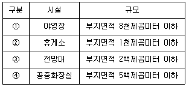
- ①
- ②
- ③
- ④
(정답률: 36%)
84. 독도 등 도서지역의 생태계 보전에 관한 특별법령상 무인도서등의 자연생태계 등의 조사에 포함되어야 할 내용으로 가장 적합하게 나열된 것은? (단, 기타 자연생태계 등의 보전을 위하여 특히 조사할 필요가 있다고 환경부장관이 인정하는 사항은 제외한다.)
- 인구수 및 가구수, 해안의 상태 및 건축물 기타 공작물의 현황, 하천현황
- 동·식물의 분포 및 현황, 특이한 지형·지질 및 자연 환경의 현황, 백두대간 및 정간의 분포, 생태관리기관 현황
- 거주민 생업현황, 동·식물의 분포 및 현황, 특이한 지형·지질 및 자연환경의 현황
- 동·식물의 분포 및 현황, 식생현황, 특이한 지형·지질 및 자연환경의 현황, 해안의 상태 및 건축물 기타 공작물의 현황
(정답률: 알수없음)
85. 환경정책기본법령상 환경부장관이 환경현황조사를 의뢰하거나 환경정보망의 구축·운영을 위탁할 수 있는 전문기관으로 거리가 먼 것은? (단, 그 밖에 환경부장관이 지정하여 고시하는 기관 및 단체는 제외)
- 국립환경과학원
- 한국환경기술진흥공사
- 한국환경자원공사
- 한국수자원공사
(정답률: 30%)
86. 야생동·식물 보호법상 벌칙기준 중 1년 이하의 징역 또는 5백만원 이하의 벌금에 처하는 행위는?
- 멸종위기야생동·식물에 해당하지 아니하는 야생동물중 환경부령이 정하는 야생동물을 시장·군수·구청장의 허가없이 수출·수입·반출 또는 반입한 자
- 국제적멸종위기종 및 그 가공품을 환경부장관의 승인없이 수입 또는 반입 목적외의 용도로 사용한 자
- 생물다양성 보전을 위하여 보호할 가치가 높은 것으로서 환경부장관이 관계 중앙행정기관의 장과 협의하여 지정·고시하는 생물자원을 환경부장관의 승인 없이 국의로 반출한 자
- 지정된 수렵장외의 장소에서 수렵한 자
(정답률: 31%)
87. 개발제한구역의 지정 및 관리에 관한 특별조치법규상 개발제한구역의 경계선을 표시하기 위한 경계표석의 규격 및 설치기준으로 틀린 것은?
- 표석재료는 강화플라스틱(FRP), 표석색채는 녹색으로 한다.
- 개발제한구역 글씨는 음각 후 압출마감(흑색)하고 번호(백색)는 도색마감으로 부착한다.
- 강화플라스틱과 콘크리트로 된 기초가 일체가 되도록 설치한다.
- 서체 : 고딕체, 색상 : 녹색(Pantone 370C)·백색(White 100%)·흑색(Black 100%)으로 한다.
(정답률: 62%)
88. 자연환경보전법상 자연환경보전기본계획에 포함되어야 할 사항으로 가장 적합한 것은? (단, 그 밖에 자연환경보전에 관하여 대통령령이 정하는 사항은 제외한다.)
- 야생동·식물의 서식실태조사에 관한 사항
- 생태계교란야생동·식물의 관리에 관한 사항
- 생태축의 구축·추진에 관한 사항
- 수렵의 관리에 관한 사항
(정답률: 28%)
89. 자연환경보전법규상 위임 업무 보고횟수 기준으로 틀린 것은?
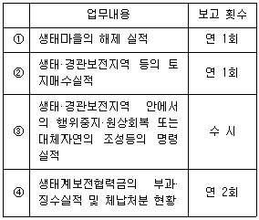
- ①
- ②
- ③
- ④
(정답률: 50%)
90. 야생동·식물보호법규상 박제업자가 야생동물의 박제품제조 또는 판매를 위해 변경등록을 하지 아니한 경우의 3차 행정처분기준(개별기준)으로 옳은 것은?
- 허가취소
- 등록취소
- 영업정지 1월
- 영업정지 3월
(정답률: 34%)
91. 농지법상 용어의 정의에 관한 설명 중 틀린 것은?
- “농업인”이란 농업에 종사하는 개인으로서 농림수산식품부령으로 정하는 자를 말한다.
- “농업경영”이란 농업인이나 농업법인이 자기의 계산과 책임으로 농업을 영위하는 것을 말한다.
- “자경”이란 농업인이 그 소유 농지에서 농작물 경작 또는 다년생식물 재배에 상시 종사하거나 농작업의 2분의 1 이상을 자기의 노동력으로 경작 또는 재배하는 것과 농업법인이 그 소유 농지에서 농작물을 경작하거나 다년생식물을 재배하는 것을 말한다.
- “위탁경영”이란 농지 소유자가 타인에서 일정한 보수를 지급하기로 약정하고 농작업의 전부 또는 일부를 위탁하여 행하는 농업경영을 말한다.
(정답률: 42%)
92. 국토의 계획 및 이용에 관한 법률상 도시관리계획결정의 실효에 관한 사항이다. ( ① )안에 알맞은 것은?
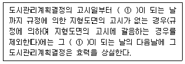
- 6월
- 1년
- 2년
- 3년
(정답률: 36%)
93. 백두대간보호에 관한 법률 시행령상 백두대간 보호지역 중 완충구역 안에서 규정에 의한 개발행위를 하고자 하는 관계 행정기관의 장이 산림청장과 사전협의시 반드시 고려하여야 할 사항과 가장 거리가 먼 것은?
- 백두대간이 단절되지 아니할 것
- 산림·경관 및 야생동·식물 등의 보호에 지장을 초래하지 아니할 것
- 지형 및 식생의 분포 등의 특성으로 인하여 특별히 보호할 가치가 있다고 인정되는 지역에 해당하지 아니할 것
- 백두대간의 보호를 위한 시설 또는 자연환경보저 이용시설을 설치할 것
(정답률: 38%)
94. 자연공원법상 자연공원 지정고시 및 지정기준에 관한 사항이다. ( )안에 알맞은 것은?
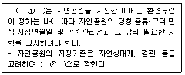
- ① 국토관리청, ② 환경부령
- ① 공원관리청, ② 환경부령
- ① 공원관리청, ② 대통령령
- ① 국토관리청, ② 대통령령
(정답률: 50%)
95. 환경정책기본법상 규정된 용어의 정의로 옳지 않은 것은?
- “환경오염”이라 함은 사업활동 기타 사람의 활동에 따라 발생되는 대기오염, 수질오염, 토양오염, 해양오염, 방사능오염, 소음·진동, 악취, 일조방해 등으로서 사람의 건강이나 환경에 피해를 주는 상태를 말한다.
- “환경훼손”이라 함은 야생동·식물의 남획 및 그 서식지의 파괴, 생태계질서의 교란, 자연경관의 훼손, 표토의 유실 등으로 인하여 자연환경의 본래적 기능에 중대한 손상을 주는 상태를 말한다.
- “환경용량”이라 함은 일정한 지역안에서 환경의 질을 유지하고 환경오염 또는 환경훼손에 대하여 인간이 수용·정화 및 복원할 수 있는 한계를 말한다.
- “환경보전”이라 함은 환경오염 및 환경훼손으로부터 환경을 보호하고 오염되거나 훼손된 환경을 개선함과 동시에 쾌적한 환경의 상태를 유지·조성하기 위한 행위를 말한다.
(정답률: 50%)
96. 환경정책기본법령상 수질 및 수생태계의 “하천”의 “사람의 건강보호” 기준으로 옳은 것은?
- 6가 크롬(Cr6+) : 0.1 mg/L 이하
- 테트라클로로에틸렌(PCE) : 0.5 mg/L 이하
- 벤젠 : 0.01 mg/L 이하
- 1.2-디클로로에탄 : 0.⑤ mg/L 이하
(정답률: 57%)
97. 국토기본법상 지역특성에 맞는 정비나 개발을 위하여 필요하다고 인정하는 경우 관계중앙행정기관의 장과 협의하여 수립하는 지역계획에 해당하지 않는 것은? (단, 그 밖에 다른 법률에 의하여 수립하는 지역계획제외)
- 광역권 개발계획
- 특정지역 개발계획
- 개발촉진지구 개발계획
- 관광권 개발계획
(정답률: 58%)
98. 야생동·식물보호법규상 생물자원보전시설 등록을 위한 인력 요건으로 가장 거리가 먼 것은?
- 국가기술자격법에 의한 생물분류기사
- 생물자원과 관련된 분야의 박사 이상 학위의 소지자
- 생물자원과 관련된 분야의 석사 이상 학위의 소지자로서 동 분야에서 1년 이상 종사한 자
- 생물자원과 관련된 분야의 학사 이상 학위의 소지자로서 동 분야에서 3년 이상 종사한 자
(정답률: 알수없음)
99. 국토의 계획 및 이용에 관한 법률상 반드시 제1종지구단위계획구역으로 지정하여야 하는 지역은? (단, 관계법률에 의하여 당해 지역에 토지이용 및 건축에 관한 계획수립이 있을 경우와 체계적·계획적인 개발 또는 관리가 필요한 지역으로서 대통령령이 정하는 지역 제외)
- 택지개발촉진법 규정에 의해 지정된 택지개발예정지구에서 시행되는 사업이 완료된 후 10년이 경과된 지역
- 도시계획법 규정에 의해 지정된 도시계획완충구역에서 시행되는 사업이 완료된 후 10년이 경과된 지역
- 임대주택법 규정에 의해 지정된 주택지조성사업계획지구에서 시행되는 사업이 완료된 후 10년이 경과된 지역
- 도시자연공원에서 해제되는 면적이 30만m2이상으로 자연녹지지역으로 존치되는 지역
(정답률: 40%)
100. 국토의 계획 및 이용에 관한 법률상 용어에 관한 정의이다. ( ① )안에 알맞은 것은?
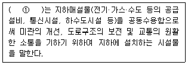
- 공동구
- 공용구
- 공동수용구
- 수용구
(정답률: 알수없음)